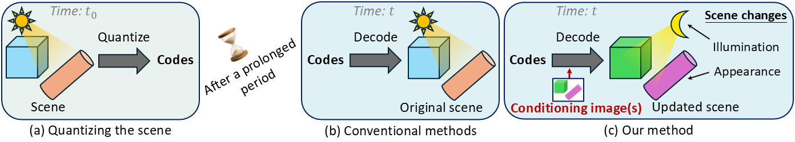
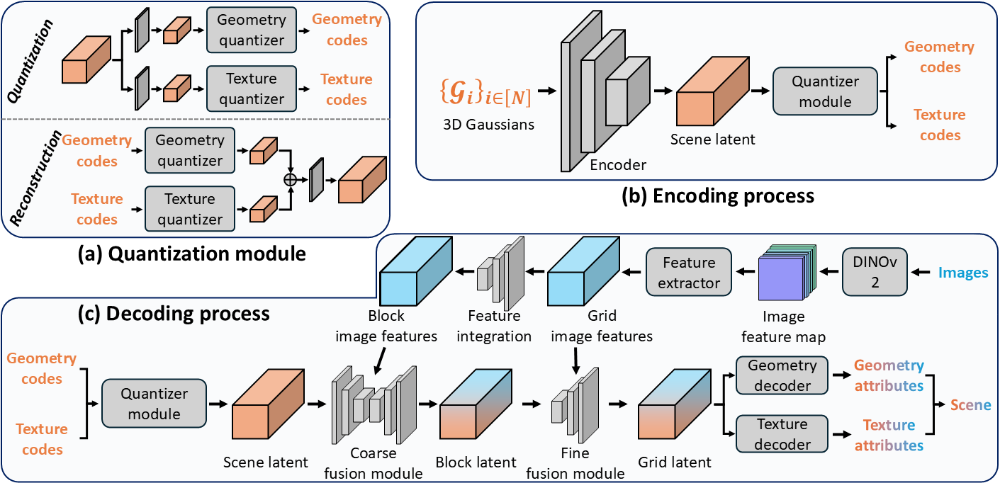

Abstract
3D Gaussian Splatting (3DGS) has attracted considerable attention for enabling high-quality real-time rendering. Although 3DGS compression methods have been proposed for deployment on storage-constrained devices, two limitations hinder archival use: (1) they compress medium-scale scenes only to the megabyte range, which remains impractical for large-scale scenes or extensive scene collections; and (2) they lack mechanisms to accommodate scene changes after long-term archival. To address these limitations, we propose an Image-Conditioned Gaussian Splat Quantizer (ICGS‑Quantizer) that substantially enhances compression efficiency and provides adaptability to scene changes after archiving. ICGS-Quantizer improves quantization efficiency by jointly exploiting inter-Gaussian and inter-attribute correlations and by using shared codebooks across all training scenes, which are then fixed and applied to previously unseen test scenes, eliminating the overhead of per-scene codebooks. This approach effectively reduces the storage requirements for 3DGS to the kilobyte range while preserving visual fidelity. To enable adaptability to post-archival scene changes, ICGS-Quantizer conditions scene decoding on images captured at decoding time. The encoding, quantization, and decoding processes are trained jointly, ensuring that the codes—quantized representations of the scene—are effective for conditional decoding. We evaluate ICGS-Quantizer on 3D scene compression and 3D scene updating. Experimental results show that ICGS-Quantizer consistently outperforms state-of-the-art methods in compression efficiency and adaptability to scene changes. Our code, model, and data will be publicly available on GitHub.
Method

We first encode each 3DGS scene into a latent representation that is decoupled into geometry and texture features. The resulting features are quantized into discrete geometry and texture codes via residual vector quantizers (RVQs) whose codebooks are shared across all training scenes and frozen at test time, eliminating per‑scene codebook storage. Storing only discrete codes rather than floating‑point latent vectors significantly reduces storage. To reconstruct a scene, we recover the latent representation from the codes and decode Gaussian attributes, optionally conditioning on current images to adapt the scene to its current illumination and appearance.
Qualitative Results
- © Xinshuang Liu